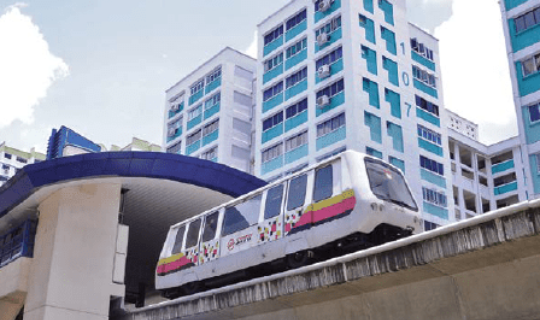
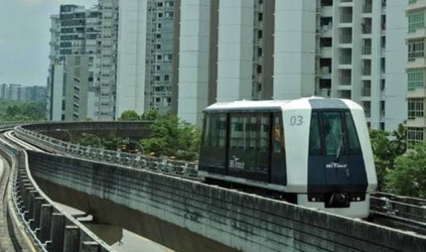

MY Singapore Train
Home
MRT
LRT
.
upcoming projects
LRT

Bukit Panjang LRT

Sengkang-Punggol LRT
Riding DRT all lines on Delta Line Project V1.5.3
Contact Information: joshua_chung@dovercourt.edu.sg.com